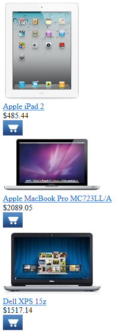

QueryRepeater
The QueryRepeater control loads any type of data from the Kentico database and displays it in a list.
Retrieves data using a pre-defined database query assigned through the QueryName property.
Automatically binds the data. You do not need to write any code.
Supports Kentico transformations.
Queries allow you to display the following types of data:
Pages (Page types -> Edit page type -> Queries)
Custom table records (Custom tables -> Edit table -> Queries)
Other objects (Modules -> Edit module -> Classes -> Edit class -> Queries)
Inherits from: BasicRepeater
Web part equivalent (portal engine): Repeater with custom query
Tip: If you only need to display page data from a website's content tree, consider using the CMSRepeater control instead.
Getting started
The following tutorial shows how to display a list of all laptops (CMS.Laptop pages) from the sample Corporate Site using the QueryRepeater control:
Create a new Web form in your web project.
Drag the QueryRepeater control from the toolbox onto the form.
Set the following properties for the control:
QueryName: cms.laptop.selectdocuments
TransformationName: CorporateSite.Transformations.ProductList
<cms:QueryRepeater ID="QueryRepeater1"runat="server"QueryName="cms.laptop.selectdocuments"TransformationName="CorporateSite.Transformations.ProductList"/>Add the asp:ScriptManager control before the QueryRepeater.
<asp:ScriptManager ID="manScript"runat="server"ScriptMode="Release"EnableViewState="false"/>The ScriptManager control included at the top is required by the transformation used to display laptop pages. It is only there to ensure that the web form is functional as a standalone example. Typically, the ScriptManager is included on the website's master page.
Save the web form.
Right-click the web form in the Solution explorer and select View in Browser.
The resulting page displays a list of laptop products:

Configuration
You can set the following properties for the QueryRepeater control:
|
QueryRepeater properties |
Description |
Sample value |
|
AlternatingTransformationName |
Name of the transformation applied to alternating items. Enter the transformation name in format <page type code name>.<transformation name>. |
|
|
DataBindByDefault |
Indicates whether the control automatically performs data binding during the Init event. (Inherited from BasicRepeater) |
|
|
EnablePaging |
Indicates whether the built-in DataPager control is used to page the list. If you wish to use a UniPager, set this property to false and add a separate UniPager control to the page. |
|
|
HideControlForZeroRows |
Indicates whether the control should be hidden when no data is loaded. The default value is False. (Inherited from BasicRepeater) |
|
|
IsSelected |
Indicates whether the data retrieved by the query contains the selected item. |
|
|
ItemSeparator |
HTML code rendered as a separator between the displayed items. |
"<hr/>" |
|
PageSize |
Sets the number of items displayed per page. |
|
|
PagerControl |
Can be used to set or get the pager control and its properties. |
|
|
PagerDataItem |
Gets or sets the pager data item object. (Inherited from BasicRepeater) |
|
|
PagerForceNumberOfResults |
If set, the pager does not modify the DataSet containing paged items, but the pager itself behaves as if the amount of paged items were identical to this value. The value must be set to -1 for the property to be disabled. (Inherited from BasicRepeater) |
|
|
QueryName |
Name of the query that the control uses to load data. Enter the full query name in format: <class code name>.<query name> |
|
|
QueryParameters |
Gets or sets an array containing parameters for the used query. |
|
|
RelatedData |
Custom data connected to the object. (Inherited from BasicRepeater) |
|
|
SelectedDatabaseColumnName |
Gets or sets the name of the column that the control uses to identify the selected item. |
|
|
SelectedItemTransformationName |
Name of the transformation applied to the selected item. Enter the transformation name in format <page type code name>.<transformation name>. |
|
|
SelectedQueryStringKeyName |
Gets or sets the name of the query string parameter that determines item selection. If the page is requested with this parameter in the URL, the control selects the item whose value in the SelectedDatabaseColumnName column matches the value of the parameter. |
|
|
SelectedValidationType |
Gets or sets the validation type used for the value of the query string parameter that determines item selection. |
"int" |
|
ShowEditDeleteButtons |
Indicates if the control renders edit and delete buttons next to displayed pages in editing modes (Page tab in the Pages application and On-site editing mode). |
|
|
TransformationName |
Name of the transformation applied to standard items. Enter the transformation name in format <page type code name>.<transformation name>. |
|
|
ZeroRowsText |
Text shown if no records are found. This text is not visible when the control is hidden by the HideControlForZeroRows property. (Inherited from BasicRepeater) |
"No records found." |
|
CMS Base control properties |
Description |
Sample value |
|
CacheDependencies |
List of the cache keys on which the control's cached data depends. When the specified cache items change, the control clears its cache. Each item (dependency) must be on one line. If you leave this property empty, the control uses default dependencies. See also: Setting cache dependencies, Configuring caching |
cms.user|all |
|
CacheItemName |
Sets the name of the cache key used to store the control's content. If you leave the value empty, the system generates a default name containing variables, such as the control ID, the selected culture and the name of the user who loaded the page. The system cache is shared by all pages in your application, so cache item names representing different data must be unique globally. If you have multiple controls that load the same data, you can share the cache keys between the controls (optimizes loading of content and avoids redundant data in the cache). If the content displayed by the control depends on variables, such as URL parameters, you can set a custom name dynamically in the page's code behind. See also: Caching the data of page components, Configuring caching |
"CMSRepeaterNews" + |
|
CacheMinutes |
Sets the number of minutes for which the control caches content retrieved from the database.
Allows you to set up caching of content so that the control doesn't have to retrieve content from the database on each request. The caching mechanism uses absolute expiration time. This means that cache items expire after a specified time period even if the page containing the control wasn't requested. See also: Caching the data of page components, Configuring caching |
|
|
FilterControl |
Gets or sets the filter control used to limit the data read by the control. |
|
|
FilterName |
Gets or sets the code name of the filter control used to limit the data read by this control. |
|
|
OrderBy |
Gets or sets the ORDER BY clause of the SQL query that the control uses to load data. |
"NewsReleaseDate DESC" |
|
SelectedColumns |
Database table columns that the control loads for pages, separated by commas ( , ). If null or empty, the control loads all available columns. |
|
|
SiteName |
Specifies the code name of the Kentico website for which the control loads data. |
|
|
StopProcessing |
If true, the control stops all processing — does not load or display any data or other HTML output. |
|
|
TopN |
Specifies the maximum number of database records that the control loads. |
|
|
WhereCondition |
Gets or sets the WHERE clause of the SQL query that the control uses to loads data. |
"ProductPrice > 100" |
Note: The QueryRepeater is derived from the ASP.NET Repeater control, so you can also set any of the base properties.
Appearance and styling
You can modify the appearance of the QueryRepeater control by setting the standard properties available for the ASP.NET Repeater control (inherited through the BasicRepeater).
The design of the items in the list is determined by the transformations specified through the AlternatingTransformationName, TransformationName and SelectedItemTransformationName properties, or by the code of item templates.